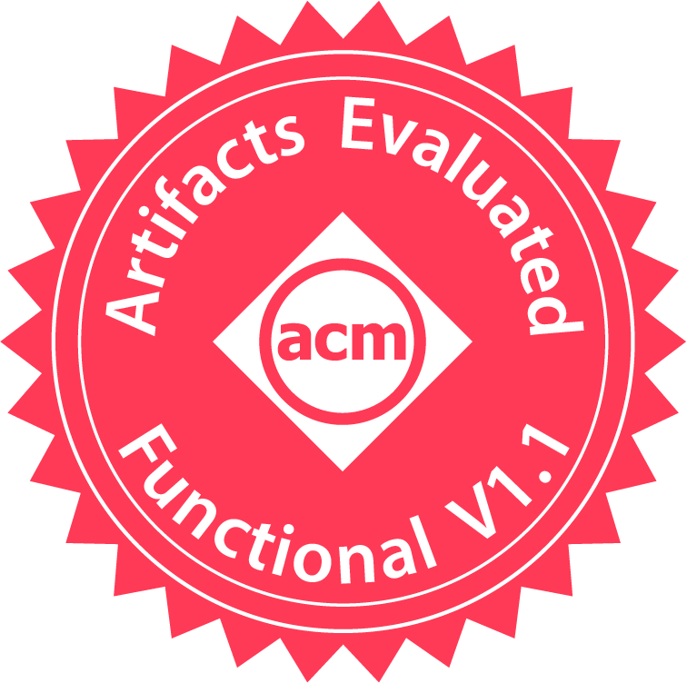
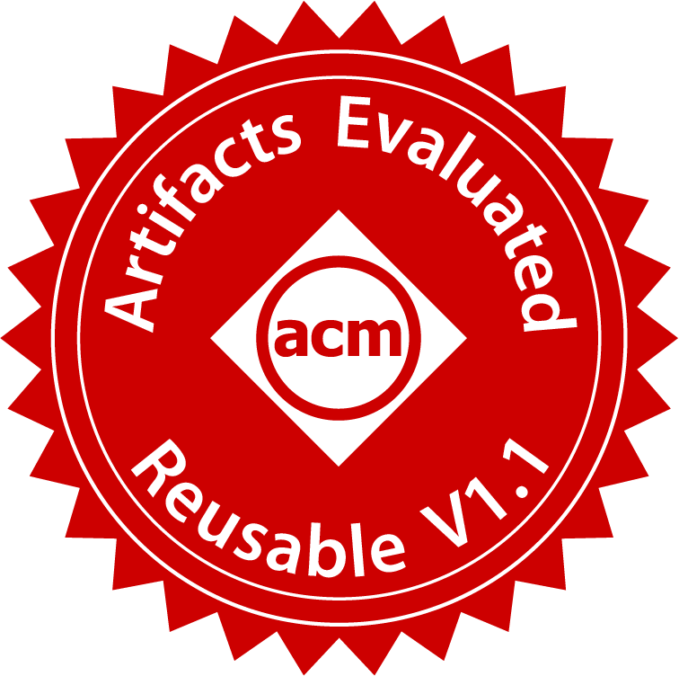

|
|
SysTEX '269th Workshop on System Software for Trusted Execution (SysTEX 2026) April 27th, 2026 |
|
|
SysTEX '269th Workshop on System Software for Trusted Execution (SysTEX 2026) April 27th, 2026 |
All artifacts and badges will be made available online by the time of the workshop.
All deadlines are Anywhere on Earth (AoE = UTC-12h).
| March 17th, 2026 | Camera ready version | |
| March 23rd, 2026 (23:59 AoE) | Artifact submission | |
| March 24th – April 10th, 2026 | Interactive artifact evaluation period | |
| April 27th, 2026 | Workshop |
Research papers often produce datasets and code, which can constitute a significant contribution of the work. Artifact evaluation aims to ensure and reward the quality of this effort. After last year's success, SysTEX'26 again includes an optional artifact evaluation phase for accepted papers, inspired by similar efforts in the security and systems communities.
Authors of accepted paper who wish to take part in artifact evaluation should register their artifact by the deadline of March 23rd, 2026 (23:59 AoE) on https://systex26ae.hotcrp.com/. Note that only artifact that are associated with an accepted paper can be submitted!
Submissions should include:
Any documentation and building/running instructions should be self-contained in the artifact (e.g., via a README file). In case custom hardware (e.g., Intel SGX, ARM TrustZone, etc.) is required, this should be clearly documented in the artifact itself. Authors may choose to optionally provide remote access to an evaluation machine with the required hardware for the artifact reviewers. In this case, login information may be privately shared via HotCRP comments.
The evaluation will be single-blind, i.e., only the identity of the reviewers is hidden but the paper and artifact should not be anonymous.
Starting this year, SysTEX will follow the ACM badging system and reward "Artifact Available" and one of two "Artifact Functional" badges. For the detailed explanation of these badges, please check the ACM website.

|
Available: Artifacts that were made available permanently and publicly via a stable URL. Any public hosting website is allowed, but not a personal webpage. When using a git repository (e.g., GitHub), a commit hash or tag is required for a stable URL. To earn this badge, no further requirements on documentation, completeness, or functionality are needed. |
|
 |
Functional: Artifacts that are (i) complete (i.e., all key components described in the paper are included); (ii) reasonably well-documented; and (iii) exercisable (e.g., building of the software could be verified). |
|
 |
Reusable: Artifacts whose quality significantly exceeds minimal functionality, e.g., the code can be ran and at least some results could be reproduced. |